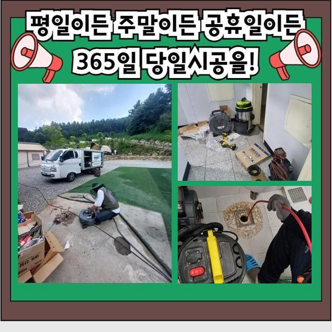
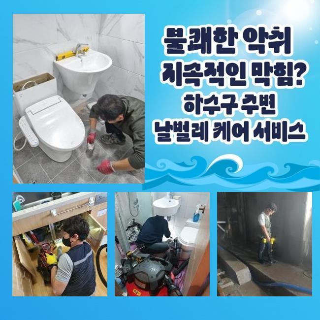
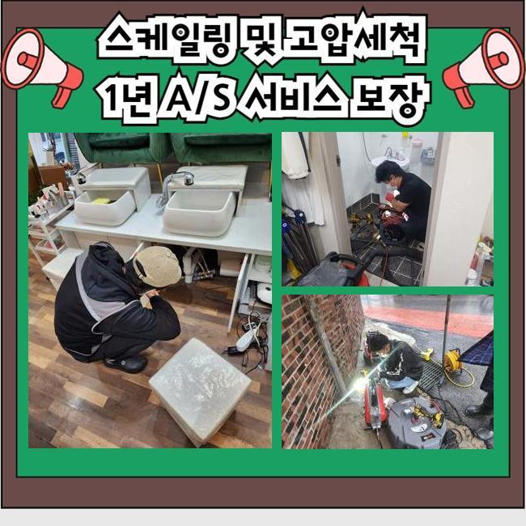
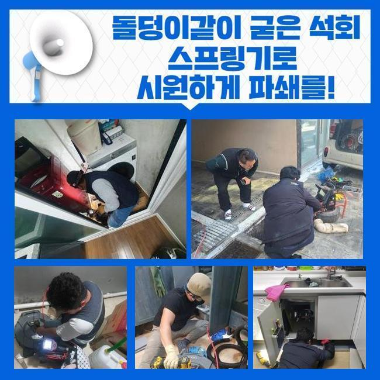
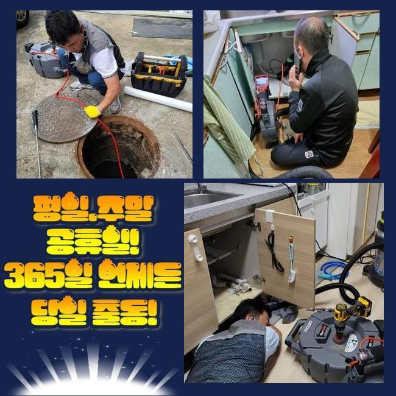

🏠 고양시 신평동오수관뚫음 벽제동 고압세척비용 배관뚫는업체
고양 하수구막힘 전문 시공 후기

📋 작업 개요
- 위치: 고양
- 서비스 유형: 하수구막힘, 배관막힘, 역류해결, 뚫는업체, 배관청소, 고압세척, 악취차단
- 작업 일시: 2024. 7. 15. 12:04
- 업체명: 하수구수사대 (010-5615-2118)
🔍 문제 상황
고양시 오금동오수관막힘 강매동 악취차단 출장수리
고객님 댁의 화장실 배수 경로가 봉쇄되어 버려서 물이 찰박하게 쌓인데다 심지어는 역류까지 빚어져서 황급히 출장을 가보았어요
바닥부로 물줄기를 직수로 내보낼 때를 포함해서 주방 욕실의 개수대 쪽에서 밸브를 돌렸을 때도 이와같은 지속적인 장애가 끊이지를 않았습니다
저희 글을 참고하시는 고객님이 계신 댁에서도 동일한 트러블이 생겨서 통수를 내주는 숙련공을 수소문 하시지는 않나요?
보통의 욕실의 배수관이 봉인되는 초유의 사건이 생기는 이유는 어떤 것이며 어떤 장비를 통해서 전문적인 케어를 해드리는지 말씀드릴게요!
건강한 시스템이면 하수구로 빠져나가야 할 용수가 불가피한 사정으로 반대로 솟구치고 바닥에 가득히 고여서 실내를 더럽히고 있었습니다
이는 욕실 주방 욕실의 개수대 쪽에서 수돗물을 틀었을 때도 흡사한 모습을 지닌 사건이 벌어지는 도중이었습니다
이곳만 해당되는 것이 아니고 화장실 하수관 장애로 물이 고였다면 추정되는 근원부는 거의 동등합니다
평범한 주거지를 보자면 화장실이나 베란다 부엌의 배수로가 동시에 수렴되어서 외부 정화조로 향하는 모습으로 설계가 이루어진 상태가 가장 보편적입니다!
그렇게 같은 곳에서 만나서든 곳은 바로 메인관인데 막대한 중책을 담당하는 기능을 담당하고 있어요

🔎 원인 분석
💡 전문가 진단: 정밀 진단 장비를 사용하여 슬러지의 고착 여부를 판명하고 타격/세척 작업을 실시했습니다.
여기가 차단이 일어났으니 실내 화장실 부엌부터 하수를 쓰는 어떤 공간이라도 물을 틀게 되면 매끄럽게 방출되지 않아서 역행이 생겨나고 맙니다
막힘의 주범이라 할 수 있는 메인관로를 추스려 주면 막힘을 탈피할 수 있을텐데요
아무래도 배관 수 자체가 많은 보일러 시설에 가까이 가서 문제점이 무엇인지를 체크에 들어가 보기로 했어요
다년간의 경험을 통해 보면 배관 장애가 두드러지는 곳이 보일러실이라 생각되어 주변부를 우선적으로 해결한다면 과잉된 검사 단계들을 간소화하고 간단히 정상화를 해드릴 수 있을 것입니다
불편한 막힘을 탄생시킨 직접적인 가해물질의 크기나 범주 등을 캐치해내기 위하여 배관용 카메라를 심층적인 구간까지 노즐을 내려서 확인에 들어갔어요
제가 들은 바로는 일부 수리업체는 배관 속 촬영기기를 통한 배관의 상태 분석을 하는 행위를 빼먹고 작업을 하는 상태가 가장 보편적입니다!
이는 전문성이 있는 업체의 처리 방법이라고 판단하기 어렵고 고장난 곳들을 모조리 찾는 목표에 못미치는 성과를 내게 될 것입니다
그러므로 의뢰 장소에 문제가 초래된 이유가 무엇인지를 체크해준 이후에 뚫어주어야만 미처리된 부분이 없이 어려움을 풀어나갈 수 있겠죠
노즐에 달린 내시경으로 관찰을 해봤더니 화면에 점도 높게 뭉쳐져있는 오염물이 밀집되어 끼어져 있음을 알게 됐어요
통상적으로 화장실 구역에 매설된 배관들은 주방 베란다와 연결돼서 바깥으로 나가는 시스템이라고 언급을 했습니다

🔧 작업 과정
모발과 음식물 찌꺼기 등이 장기간 축적되면서 관로를 가득 채워버린 점이 하수구에 나타난 장애의 커다란 요인으로 간주되었습니다
은근하게 계속 적립되어 오면서 하수관을 중지시킨 오염물을 걷어내 준다면 하수구멍에서 넘치는 물도 모두 종료될 겁니다
이때 기능을 발휘하는 장비는 하수구 안을 정돈할 때 여러 번 가동하는 기구로 스프링이라고 명칭되는 청소 도구예요
노폐물을 효과적으로 치워주는 스프링 모양을 갖고 있는 파트와 본체를 합친 이후에 적용하게 됩니다
회전을 하게 될 관통 기기를 관로를 열어줘야 하는 지점까지 넣어줘서 전원 버튼을 눌러주면 기계의 말단 부위에 달하기까지 진동이 갑니다
돌리는 힘을 활용하여 고속으로 회전되는데 잔뜩 이물질이 낀 배관에 타격을 형성하는 겁니다
이런 활동을 통해서 현장의 배관 안쪽에 장기간 머무르고 있던 물질이 파편으로 부서지면서 밑으로 흘러나가거나 구멍 바깥으로 구출해 내면서 내부가 깨끗하게 되는 겁니다
초반에는 꿈쩍도 하지 않던 건물 외곽의 하수구에 뱅뱅 돌아가는 청소기기로 관통을 해주고 나자 성과가 바로 눈으로 보였는데요
수 분간 집중해준 뒤에 내부 관찰을 재실시했더니 기름때문에 슬러지화가 됐던 잔수가 싹 사라지고 대신 맑은 물이 경쾌하게 흘러내려 가더라고요
내부가 몰라보게 달라진 현황은 문제됐던 노폐물들이 모조리 삭제되어 배관이 명쾌하게 열리고 기능도 회복했다는 뜻입니다
얼마간의 하수구 뚫는 작업을 하고 난 후 다시 카메라를 메인배관에 넣어 상태를 확인해보기로 했습니다
관로 속에서 변성이 되며 냄새까지 조성했었던 오염물질은 흔적 없이 사라져서 업그레이드가 된 듯 훤하게 바뀐 모습을 확인해 보실 수 있는데요
소개해 드린 작업지도 그렇지만 생활을 이어가다보면은 물이 나가는 통로에 오염물질이 켜켜이 쌓여가면 장기화가 되면은 고질적 하수구 장애가 촉발되거나 세균이 번식하는 등의 각양각색의 이슈들이 잇따르게 될 것입니다
모든 구조물에서 공통적으로 벌어질 수 있는 사안이니 지금까지 설명해드린 바와 같은 배관의 세심한 정리정돈을 꾸준히 실천하는 것이 소중한 관리임을 강조드리겠습니다
하수가 겉으로 치솟던 사태도 처리가 되었는지 체크하면서 오늘 뚫어드린 작업지의 시공 절차를 마무리 하기로 결정하였습니다
고여있던 물도 사라지고 깨끗해졌음을 바로 인식할 수 있었기에 작업이 잘됐구나 확신을 얻었습니다


✅ 작업 완료
욕실 이외의 다른 곳에서도 수돗물을 공급해 보았는데 지연 없이 순조롭게 물이 정상 배출되는 점도 꼼꼼히 확인을 끝냈습니다
욕실배관의 마비로 인한 환경을 방해하는 문제들이 철저한 과정을 거쳐가서 긍정적 변화를 만들었습니다
여러분들의 집을 포함한 어떤 곳에서라도 하수구가 막혀버리는 사태가 탄생하면 문제 근원부와 해결 전략이 제가 알려드린 내용과 거의 같은 수준일 것입니다!
지금 겪고 있는 상황에 대한 설명을 거리낌 없이 저희에게 말해주시면 준비를 해가서 바로 손봐드리겠습니다
방문은 편하신 시간에 맞춰드리니 홀로 고군분투하지 마시고 건물 속 하수관을 신속하게 되찾으시기를 바랍니다




⚠️ 하수구 배관 막힘 예방 및 관리 가이드
- ✅ 머리카락, 비닐, 물티슈 등 물에 분해되지 않는 이물질은 하수구 유입을 절대 금지해 주세요.
- ✅ 하수구 거름망을 씌우고 모여진 이물질은 주기적으로 쓰레기통에 바로 비워주셔야 합니다.
- ✅ 배관 노후가 심할 경우 이물질이 더 쉽게 걸리므로 주기적인 배관 세척(고압세척 등)을 권장합니다.
- ✅ 작업 후 1년 이내 재발 시 하수구수사대에서 무상 A/S 보증 서비스를 제공합니다.
💡 핵심 정리
- 확실한 장비 작업(내시경 점검 및 샤프트 스케일링)으로 원인을 뿌리 뽑습니다.
- 작업 후 1년 이내에 동일한 부위 재발 시 100% 무상 A/S 서비스를 보장합니다.
- 서울 · 경기 · 인천 전 지역에 24시간 언제든 긴급 출동할 수 있도록 항시 대기 중입니다.
❓ 자주 묻는 질문 (FAQ)
🚨 고양 하수구막힘 문제로 고민이신가요?
정확한 원인 진단과 확실한 시공으로 재발 없는 해결을 약속드립니다.
24시간 긴급 출동 | 서울 · 경기 · 인천 전지역 | 1년 내 재발 시 무상 A/S